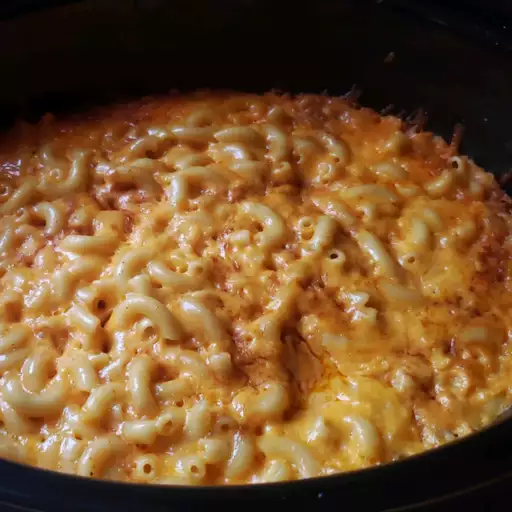
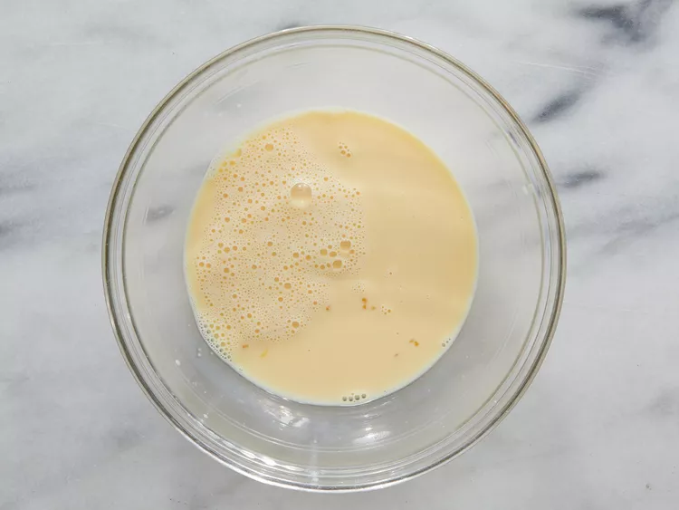
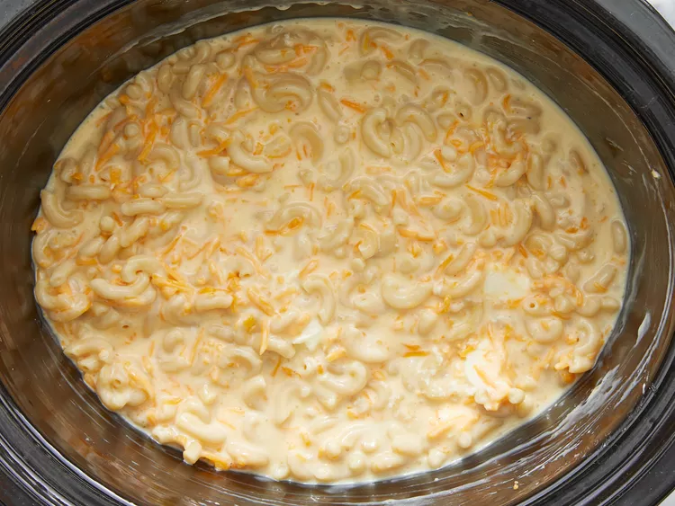
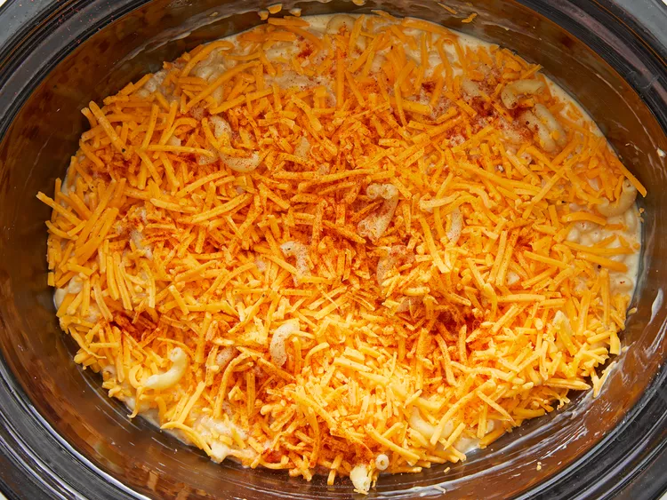

ODIN SLOW COOKER MAC & CHEESE

DESCRIPTION OF DISH
This crockpot mac and cheese recipe is
creamy, comforting, and takes just moments
to assemble in a slow cooker. Great for large
family gatherings and to take to potluck
dinners. It's always a big hit!
INGREDIENTS
- 1 (16 ounce) package elbow macaroni
- ½ cup butter
- salt and ground black pepper to taste
- 1 (16 ounce) package shredded Cheddar cheese, divided
- 1 (5 ounce) can evaporated milk
- 2 eggs, well beaten
- 2 cups whole milk
- 1 (10.5 ounce) can condensed Cheddar cheese soup (such as Campbell's®)
- 1 pinch paprika, or as desired (Optional)
DIRECTIONS
Step 1
- Fill a large pot with lightly salted water and bring to a
rolling boil. Stir in macaroni and return to a boil. Cook
pasta uncovered, stirring occasionally, until tender yet
firm to the bite, about 8 minutes. Drain and transfer pasta
to a slow cooker.
Step 2
- Add butter to pasta and stir until melted; season with
salt and pepper. Sprinkle about 1/2 of the Cheddar cheese
over pasta and stir.
Step 3
- Whisk evaporated milk and eggs together in a bowl until
smooth; stir into pasta mixture.

Step 4
- Whisk milk and condensed soup together in a bowl until
smooth; stir into pasta mixture.

Step 5
- Sprinkle remaining cheese over pasta mixture; garnish with paprika.

Step 6
- Cook on Low for 3 hours.
Step 7
- Serve hot and enjoy!

TIPS
Some slow cookers take less time. Check the edges are not
getting too brown after 2 1/2 hours.